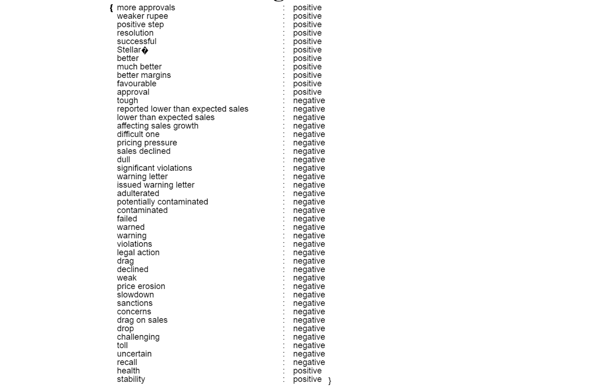

The idea for this project started out with just wanting to visualize highly abstracted algorithms that play a role in our everyday life. I started thinking about algorithms in different domains and sectors and was most drawn to the impact that algorithms used in the finance sector have on us.
Conception
(Alternative to the current homepage)
My curiousity to understand the abstractions behind some of these algorithms lead to wanting to represent one to two iterations of it in my final demo.
I tried to research algorithms used in banks, stock markets, mutual funds and insurance. I found that the algorithmic trading practices in stock markets were quite fascinating due to its dynamic nature. I tried to pick a simple and visually stimulating algorithm that is used in the stock market. As I read more on the different trading strategies deployed in these systems, I found that sentiment analysis could be a good topic to showcase.
I found some analysis and research that showed how this was affecting the actual markets and I picked such an analysis/tutorial to use as my dataset in the 'hypothesis' section.
I chose the basic 'bag of words' algorithm to showcase the steps and then started to see if I can break down the entire process into 3/4 chunks. I happened to divide it into 3 parts which I then visualized : (i.) Extract words from documents (ii.) Classify words by frequency (iii.) Score words based on their sentiment and clarity in the phrase (by weighted score)
I ran a python script to get the scores from NIFTY Pharma and compare it with NIFTY stock exchange scores from the period of October 2016 to December 2016. These are the resulting charts when visualizing them. I have tried to incorporate that in my final demo.
Design Process
From the beginning I wanted to represent a story within one-page with different interactive components. I wanted to incorporate a color theme of contrasting 'red' and 'green' that is analogous to my main storyline of the stock market [buy/sell or bullish/bearish]. I tried to stick with the theme by choosing black and yellow as a background to go with these colors. (This was an initial design for showing the different steps on mousehover the circles)
I then pivoted to try and display all the visuals within the screen space instead of having small chunks on the screen. So I tried to seperate them into the first page with just the words from the document 'floating in the air' and then clicking through other pages. The second page is a 'word cloud' that depicts the idea of a 'BAG OF WORDS'. I used the rita.JS library with P5JS to count and display the words in my dataset. I initially also tried to see if I can use the wordcloud concept to display the actual numbers of the stocks from the NIFTY exchange but that resulted in this display -
(The numbers were decimals which was harder to classify and visualise in the wordcloud format - but it makes an interesting cluttered look I think.)
As I tried to come visualize the scoring of the words in my dataset, I tried to showcase each individual word and phrased that was scored and display it in the following manner -

(Words from the document with scoring - just displayed on canvas initially)
Then, onto actually showcasing the hypothesis was a bit of a struggle as I was trying to see how I can show the peaks and curves of the results. A line chart seemed like the simplest and most effective tool and I tried to use D3 first and then switched to P5JS. I wanted to make two seperate line charts of NIFTY and another with Pharma and have them animate to a combine version in 3D using the WEBGL option - but I learnt later that this 3D feature isn't available on p5JS yet (so I had to resort to one chart with all the information on it). I also had to rotate the origin to the bottom-left corner as my line graph was looking inaccurate otherwise with the points being plotted to a different scale and order (As shown here - a misrepresentation)
Challenges encountered :-
I tried various techniques to incorporate the single-page setup. I planned on using a CSS template with buttons that can manipulate the div elements to move the canvas from one section to another and also try 'Scrollama' library. But for both, I felt like the support from p5JS was not compatible. Infact, I spent a large chunk of my week 4's time on the instance mode in p5JS but it was just very clunky an hard to name all variables within a scopr of a sketch with one 'p' variable and then combine it - each time one of the charts/sketches were showing up in the wrong place or didn't show up at all.
I also ran into some inconviniences with the translation of the canvas leading to rotating the display text on all of them too. - then was able to use the push() and pop() functions to correct that properly.
I also had some difficulty in framing the scope of the final piece as I was trying to show various pertinent elements. I wish I had a better/tighter storyline (+an editor to help with that maybe haha).
Abandoned Explorations :-
- I wanted to match each word in my showwords.js file with the red and green theme and arrange it in a circular fashion as the first wordring.js does.
- I really wanted to explore the possibility of using 3D representation/WEBGL materials in this project (which I did try but WEBGL for p5JS support is very poor and still in beta). My idea was to draw the line graph in 3D with each of the lines intersections in worldspace, but I did not get to do it in p5js or have enough time to understand three.js. I will continue to try it.
Lessons learnt :-
I learnt that its important to have a paper prototype throughout the design process. I initially started out by drawing out the visuals, but some of them were not very effective when I coded them and then I had to revise. I thought I knew what I had in mind but I ended getting some other results which was sometimes surprising, slightly dissappointing and time consuming overall. I would definitely try to tell others attempting such a thing to be clear and open to new interpretations of the concept. I was struggling with that through the 2nd week. I then had to prevent myself from being distracted and concentrate on the subject that I really wanted to show and how they can be connected.
Tips, Tricks and Tactics :-
- I relied on the blogs on p5JS to really understand the scope of the library. The ways in which people used their canvas and how simple functions produces some really cool visuals was eye-opening.
- I found that codepen was a great resource to understand different visualization explorations. It also has a breakdown of each pen's HTML/CSS/JS code that helps you understand how you can make your ideas actually work or not.
- The Coding Train was super useful!
Ideas for future direction :-
- If I had more time, I would have tried to showcase this entire process in better detail firstly. With interactability in each chart and relevant and useful data that helps anyone understand with utmost clarity.
- I would have also liked to expand this from one document and its words and sentiment to giving the user a chance to try multiple documents that could be visualized (every step/iteration of the algorithm) and then even upload their own documents to see what it looks like.


 (The numbers were decimals which was harder to classify and visualise in the wordcloud format - but it makes an interesting cluttered look I think.)
(The numbers were decimals which was harder to classify and visualise in the wordcloud format - but it makes an interesting cluttered look I think.)